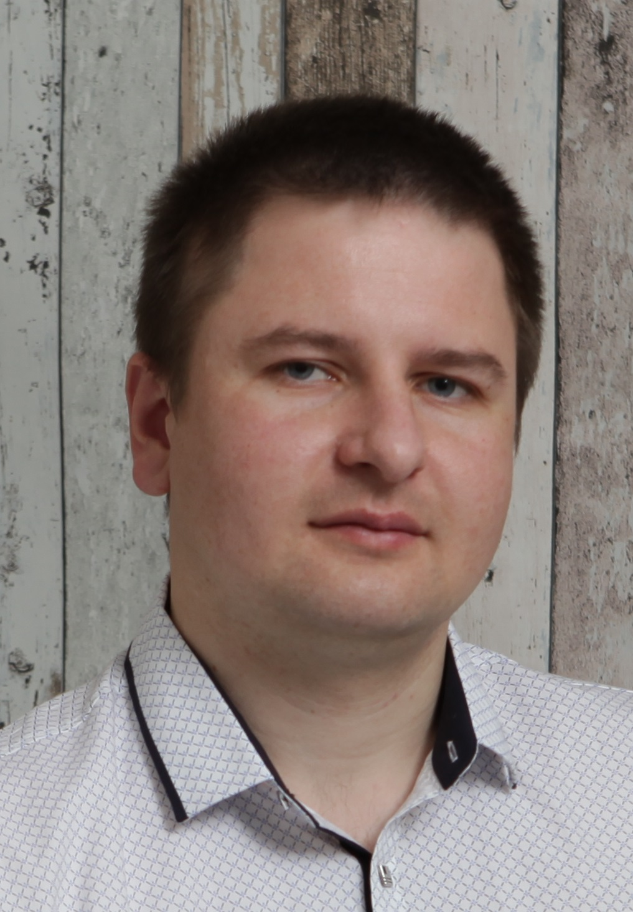

I am determined and productive web developer with a passion for creative solutions. I am constantly learning the latest technology and continuously improving my technical skills. I have experience in industrial electronics and think outside the box. I am stress-resistant and purposeful. Looking for an entry-level position at a productive company to be a hard-working asset to any team, to learn, grow and develop long-term.
⚫⚫⚫⚪⚪ HTML/CSS
⚫⚫⚪⚪⚪ JS (ES5, ES6+)
⚫⚫⚪⚪⚪ GIT
⚫⚫⚪⚪⚪ Figma
Github@Al-eks
Brest State Technical University
2008-2014, Brest, Belarus
Department ASIP, 1-53 01 02 "Automated systems of information processing"
English - Pre-Intermediate (A2), I continue to study and study with a tutor
Russian - Native
Polish - Advanced (B2)